King
Nejžádanější řada. Robustní střih s barevným dílem, drží tvar i po sezóně praní.
7 střihů
Firmu založil Petr Král v roce 1993 a první pracovní oděvy šilo pět lidí. Dnes je nás pětačtyřicet a šijeme pořád na stejném místě v Kunžaku.
Začínali jsme u několika druhů pracovních oděvů, spodního a nočního prádla. Postupně přibyly oděvy pro zdravotnictví a potravinářství a certifikované pracovní oděvy — tedy všude tam, kde na střihu a materiálu opravdu záleží.
Veškerou výrobu si zajišťujeme sami: návrh, konstrukci, nastříhání i ušití. Nic nekupujeme hotové a nic nedáváme ven. Proto vám umíme říct, proč je v tom místě zesílení — a proto ho umíme posunout, když vám nesedí.
Za svojí prací si stojíme. Férová cena, dodržené termíny a zákazník, který se vrátí. Nic složitějšího za tím není.
Řada je rodina střihů ve stejném materiálu a stejné logice kapes. Uvnitř řady se dá sladit celý tým napříč profesemi.
Nejžádanější řada. Robustní střih s barevným dílem, drží tvar i po sezóně praní.
7 střihů
Osvědčený bavlněný střih bez ozdob. Kdo chce monterky jako dřív, bere tuhle řadu.
3 střihů
Modernější střih s výstražnými prvky a zesíleními na exponovaných místech.
3 střihů
Zateplená řada pro chladné provozy a venkovní práci.
1 střihů
Výstražné oděvy podle EN ISO 20471. Fotografie dokončujeme.
17 střihů
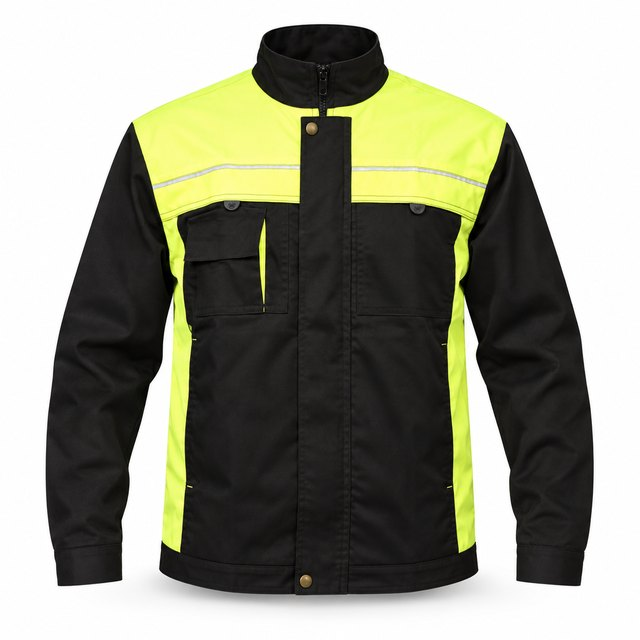
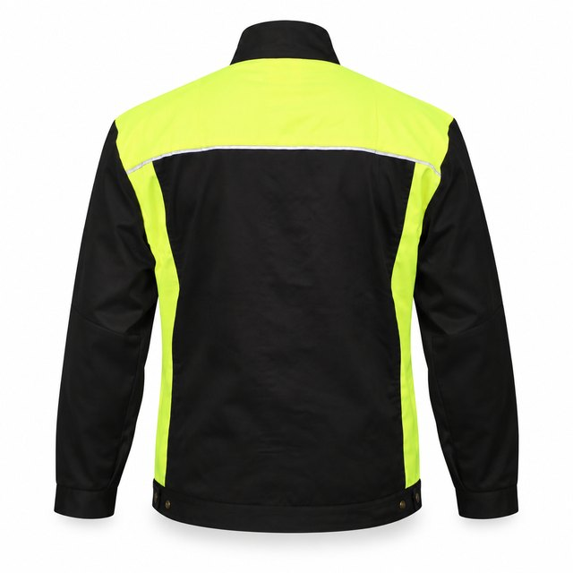
65 % PES / 35 % BA · 245 g/m²
1 barva · vel. 46–66
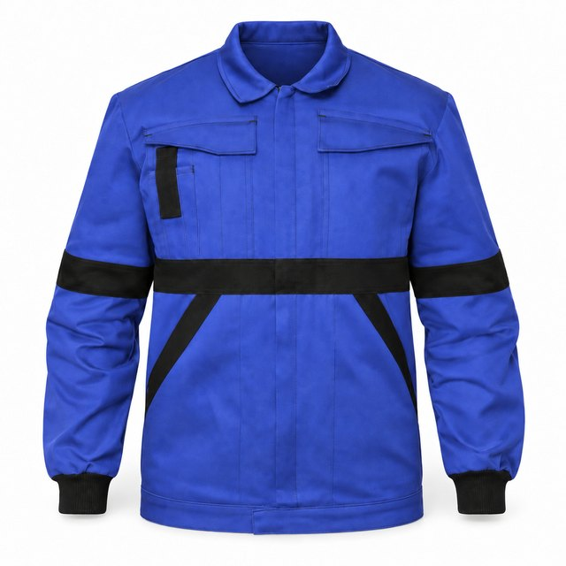
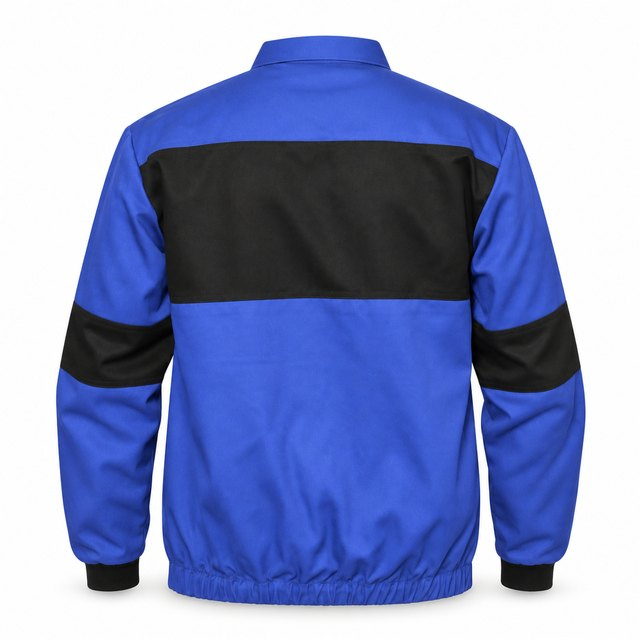
65 % PES / 35 % BA · 260 g/m²
5 barev · vel. 46–66
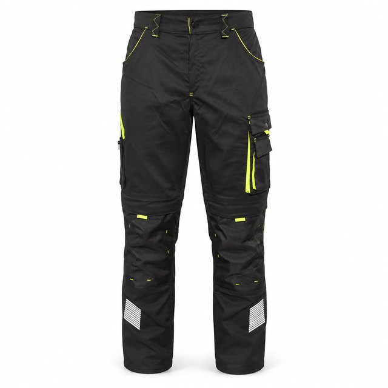
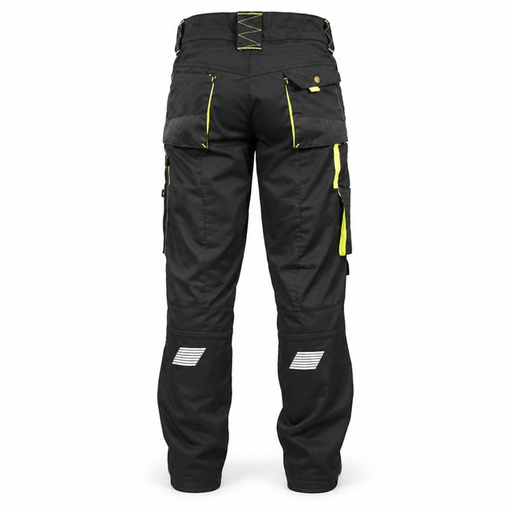
65 % PES / 35 % BA · 245 g/m²
2 barvy · vel. 46–66
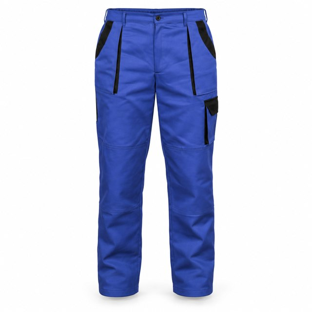
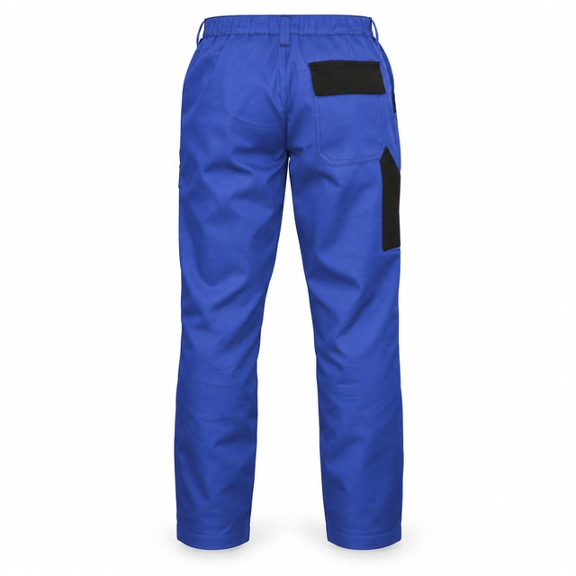
65 % PES / 35 % BA · 260 g/m²
4 barvy · vel. 46–66
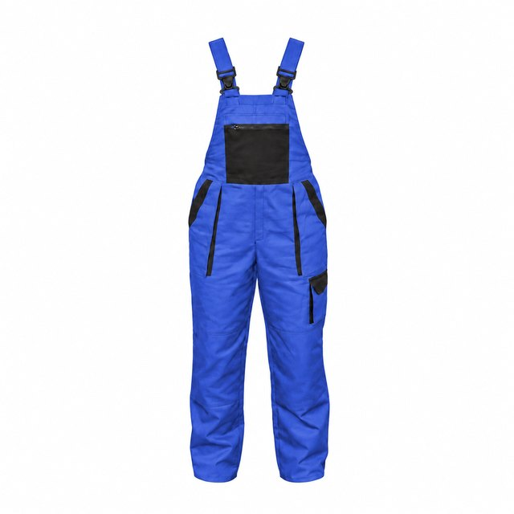
1 pohled65 % PES / 35 % BA · 260 g/m²
4 barvy · vel. 46–66
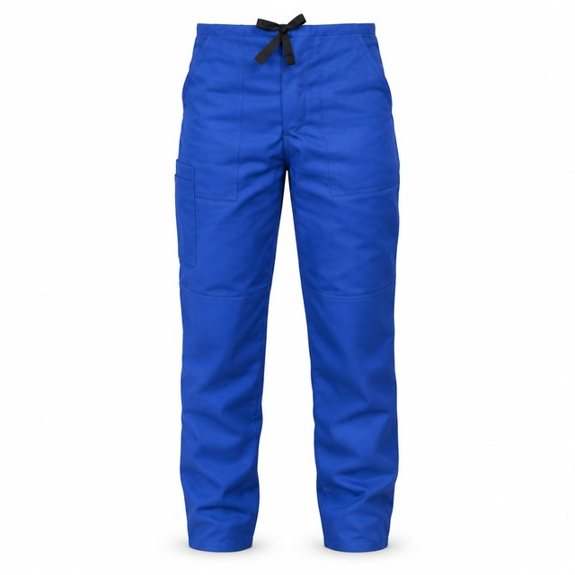
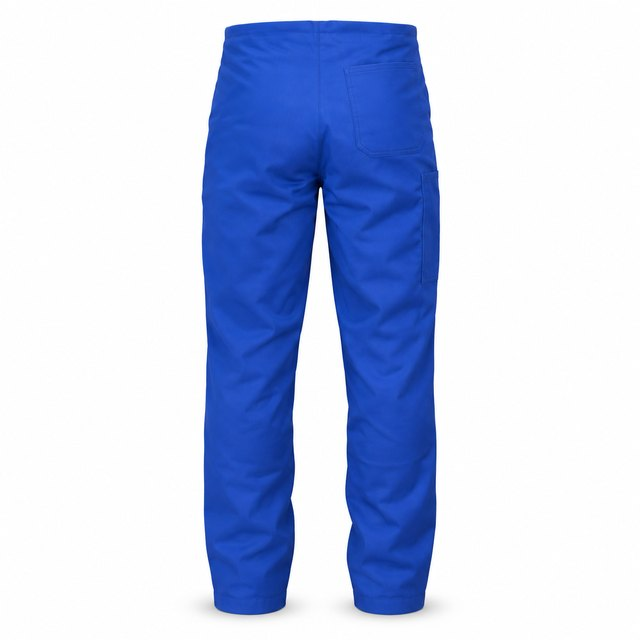
65 % PES / 35 % BA · 260 g/m²
3 barvy · vel. 46–66
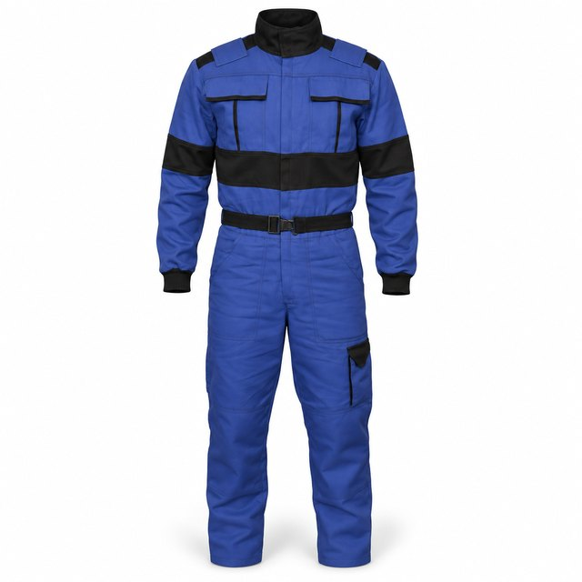
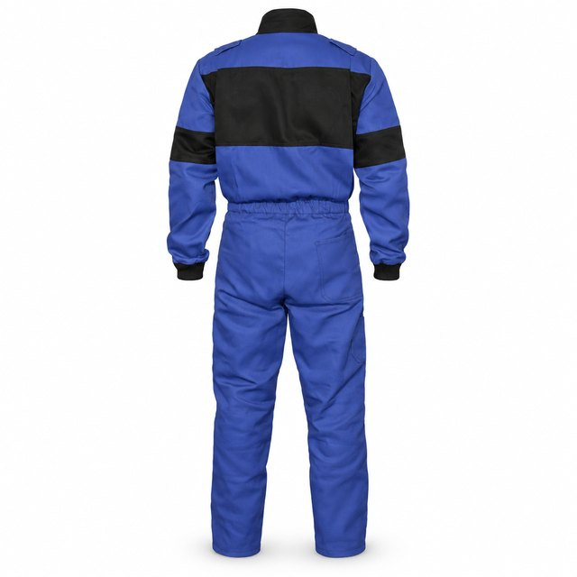
65 % PES / 35 % BA · 260 g/m²
4 barvy · vel. 46–66
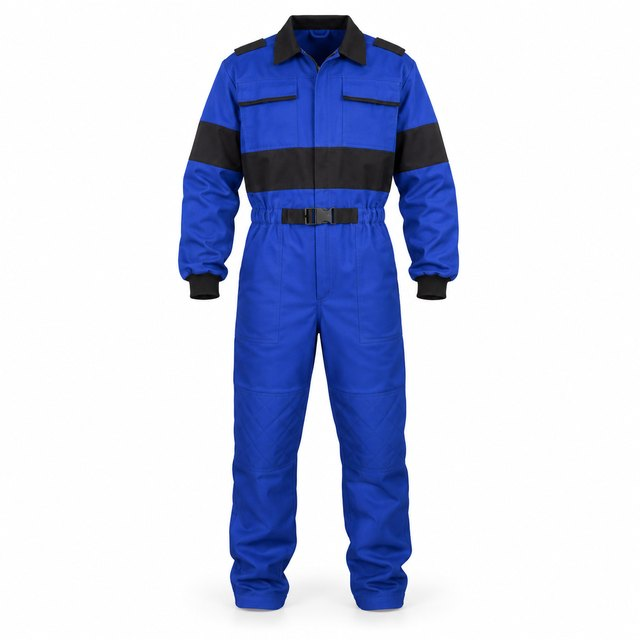
1 pohled65 % PES / 35 % BA · 260 g/m²
2 barvy · vel. 46–66
Kvalita se nedá tvrdit, dá se ukázat. Tohle jsou nezmenšené výřezy z produktových fotek.
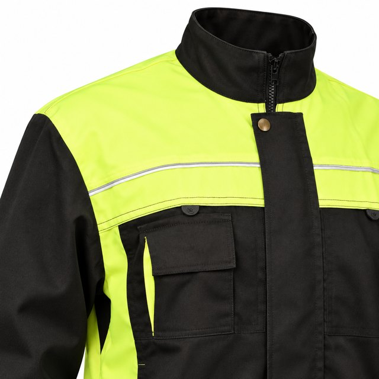
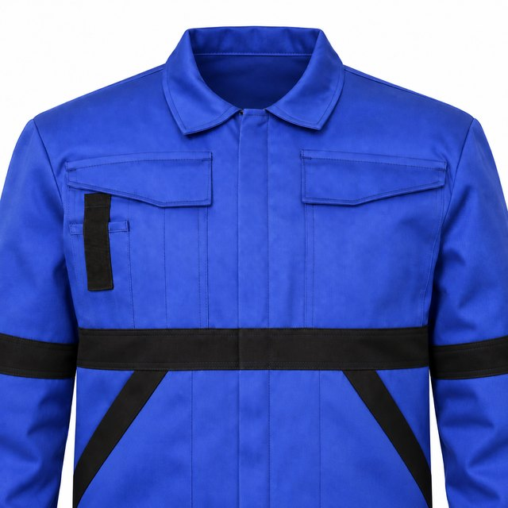
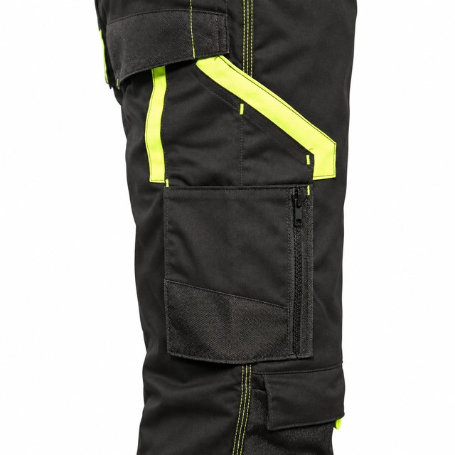
Nový vzor není u nás výjimka — nasamplujeme ho, vyzkoušíte ho v provozu a teprve pak se šije série.
Ušijeme jeden kus podle vašeho zadání nebo podle existujícího střihu z archivu.
Vyzkoušíte ho v provozu. Co nesedí, upravíme v konstrukci — délku, kapsy, zesílení.
Ušijeme celou zakázku v odsouhlaseném střihu, velikostech a barvě.
kombinéza, kalhoty do pasu, bunda
laclové kalhoty, blůza, plášť
kalhoty King, bunda King, kraťasy
plášť, souprava, blůza
monterková souprava, kalhoty Klasik
Řadu, barvu a provedení.
Po velikostech, ne jedno číslo.
Bez registrace a bez hesel.
Do dvou pracovních dnů i s termínem.
| Množství | 1–9 ks | 10–49 ks | 50+ ks |
|---|---|---|---|
| Cena / ks bez DPH | — | — | — |
Ceník připravujeme. Rozpětí hladin platí, čísla doplní M+P Král.
Nová 401
378 62 Kunžak
okres Jindřichův Hradec
Petr Král M+P
IČ 43861431
tel./fax +420 384 399 306
po–pá 7:00–15:30
so–ne zavřeno
Napíšete, co potřebujete a kolik kusů.
Do dvou pracovních dnů potvrdíme cenu i termín.